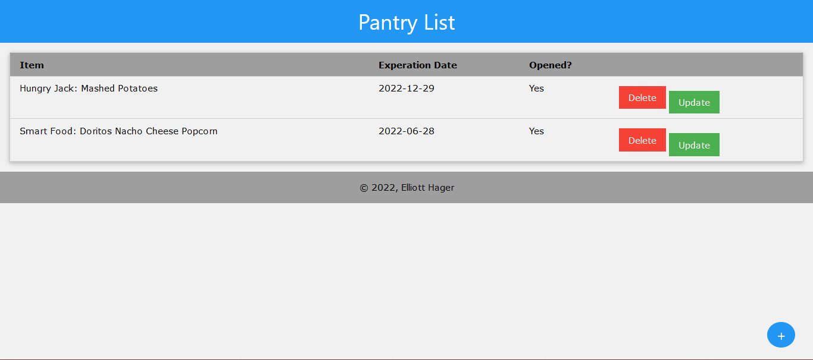

Projects
The images to the left of each project description are links to GitHub pages where the programs, in their entirety, are hosted. The programs can be ran on Repl.it through the link in the README.md (Except for the honors page, and The Design Scribe Work portfolio)
Project APEX

This is the first major program that I had wrote. Apex is a basic digital assistant, with a calculator, conversation bot (WIP), small games (WIP), and more. This was written in Python and was last updated in spring of 2019. A Java port is currently in the works.
Adv. Geometry Olympic Logo
This project was made for high school advanced geometry. The original project asked for the student to draw an Olympic logo for a country they choose and to include different geometric aspects (tangents on a circle, different angles, etc.) I chose to do Japan, and asked the teacher if I could make a program to draw my logo instead of doing it by hand. This was done in Python with the Turtle library. At this point, I had not has any experience with object oriented programing. The code is messy, but I wanted to leave it in its original state.
STEM Honors Web Portfolio (The collection of web pages you are on now!)
The portfolio that is being viewed currently is one of my projects! This was a project for WEBD-101 at Franklin University during the Spring 2021 semester. This page was made from the ground level up, with HMTL, CSS, and a small bit of JavaScript and jQuery. One week at a time, the project was built upon, which was finished by the last day of class (4/17/2021). Professor Waicheong Jefferylam helped answer questions when I wanted to tweak or change aspects of the pages that moved away from the requirements. The occasional moving away from the requirements was due to the purpose of the sites creation and use. An example of this is the requirement to have one (1) CSS file, but multiple CSS files were permitted due to it fitting the purpose of the site better.
Single Player Pong
Desktop & Mobile Version

The game is being developed for Android and desktop, with hopes to be able to make a IOS version soon.
A single player version of the classic arcade game Pong.The Libido Java game development library is utilized
in this projects with using InteliJ as the preferred IDE when dealing with LibGDX.
The application was built using the Java 15.0.1 JDK for compatibility references.
The android version is being worked on and could be published on the Google Play Store, just need a development license.
Versions: Android Version | Desktop Version
The Design Scribe Work

I was employed at The Design Scribe, a small local start up office, graphic design, and web design business. I held the position of general administration and cashier. I had done a couple of small web development/design projects while employed there. These projects were just updating a clients website with the most current information. However, I did help with getting the website to work with LittleHoteller, a hotel booking engine.
Bingo Caller Machine

A simple text-based bingo caller machine made in Java, with the ability to customize the cards to be played. The idea came about after helping out with a Science Olympiad fundraiser in which bingo was played.
The caller had software to pick the next number and to put them on a virtual caller card. They had voiced an issue and annoyance they had with the software, the lack of board customization.
The caller was more specifically frustrated when the letter H was being played, where no N numbers were needed due to the free space being used.
Currently this project is in a inoperable state! Currently working to get it to a working state before showing the client
WL-S High School Band Database
A CodeIgniter 4 project for my local high school. The band program has hundreds of pieces spread across the concert and marching band seasons. The current way the music library is, a print out of an outdated spreadsheet in which the source file has been lost, is inefficient. Due to not having the source file, I will be entering all of the pieces by hand. While this will take a while to accomplish, it is worth the extra time in the setup for a less painful end user experience when deployed. My PHP skills learned in Franklin University's WEBD-263: Web Information Systems course are being pushed and expanded upon when working on this project. I had not used a PHP framework, so this is helping me learn CodeIgniter along the way too. Languages, Frameworks, and Server Software Used: PHP 8, HTML 5, CSS 3, CodeIgniter 4 and, XAMPP Web Server
Franklin University COMP-294 Spring 2022 Project: Comic Book Collection
This is the project I partook in during the first computer science practicum course (COMP-294: Computer Science Practicum I) at Franklin University. The level of work expected was to be a quality assurance person and test the application. Instead I was given the role of a junior developer. I worked on several tickets, the first of which was the fronted of the login screen. The second ticket I was assigned was where most of the eight week development time I had was spent on. This was called the comic collections screen due to displaying the user's comic collection in a grid. On the right side of the homepage there is a scrollable list of the user's friends' activity. The last ticket I worked on was testing the application, during the last couple weeks of the project development time. I tried to test corner cases and made detailed documentation on how to replicate the issue, then sent it to the rest of the team.
Pantry Contents Web Application
This application is to help keep a track of what is in a pantry, while simple, it is useful for my immediate family. My immediate family has a very deep pantry cuppoard that is hard to see and remember what is all inside. The application will be hosted on a thin client and a QR code will be used to let family members scan and be taken to the link of the web application, which is hosted on the houses LAN.